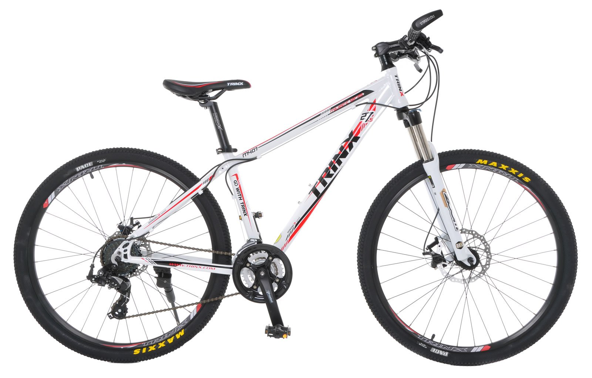

| Mountain bike Mountain biking is a popular and exciting off-road adventure sport and recreational pursuit. Over the years it has diversified into many different riding disciplines including cross country, trailriding, all mountain or enduro, downhill, freeride and dirt jumping, each requiring a uniquemountain bike design, kit and trail type.Mountain bikes are designed for riding in rough terrain with features to enhance durability and performance. They are typically ridden on mountain trails and natural landscapes which have hardrocks, loose dirt, muddy or grassy tracks, and steep slopes. Electric mountain bikes are battery-assisted bikes that are less exhausting for the riders. These bikes have broadened the appeal of mountain biking and attracted a wider age range to the sport. | |
|---|---|
|  | |
Back To Home Page? | |